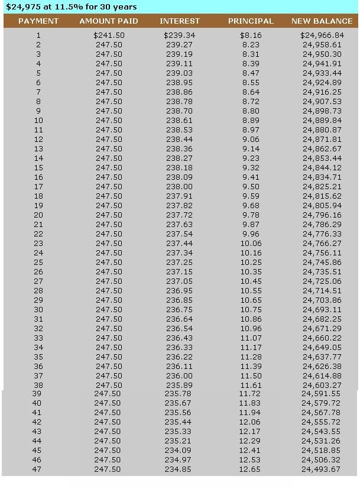

I'll never forget the day I received my first home mortgage. The $247.50 monthly payment represented just about the most awesome figure I had ever seen . . . and the thought that I would be 58 years old when I eventually got my 30-year mortgage paid off seemed nightmarish. However, the biggest shock came when I realized that the actual cost of my home would more than triple -escalating from $26,300 to about $90,000-simply because of the 11.5% interest I would be paying over the next three decades. At the time, it seemed as if I'd never experience the exuberance of being able to say, "I own it free and clear."
In fact, I was so distressed by the sheer size of my self-imposed debt that I finally decided to discuss the situation with my banker. She told me about a very easy, legal, and logical method to cut the life of my mortgage in half . . . thereby eliminating morethan50% of the interest charges!
Simply put, each monthly mortgage installment comprises an interest charge and a payment applied to the principal amount of the loan. (Some lenders include insurance and taxes as well.) As long as the balance owed is high, the interest charges will be high. Therefore, by adding extra amounts of principal to each mortgage payment one can save thousands of dollars in interest expense.
Let's take the case of my own mortgage as an example. The first 47 of my 360 payments due were distributed as indicated on the accompanying amortization schedule. (This chart is a computer printout that shows the history of a loan and describes how each payment is broken down into principal and interest.)
At the end of my first year, I'd shelled out $2,866.81 in interest and only $103.19 of the principal. In effect, I had paid the lending company almost $3,000, and reduced my loan by a whopping $100!
My banker advised me to include five extra payments on principal along with every regular monthly mortgage installment. By starting right then and keeping up that system for three years, she said, I could reduce the term of my obligation from 30 years to 15.
Well, I could hardly believe it, but it's true . . . because I checked with two other bankers, a financial consultant, and some other business people I knew. [EDITOR'S NOTE: MOTHER didsome checking, too, and found Dennis's plan to be workable for most mortgages. However, some mortgage contracts include a "prepayment penalty clause" . . . if yours does, it may cost you money to pay off your debt early! In addition, for persons who hold a mort gage with an interest rate below 10%, it maybe more prudent to invest extra funds elsewhere at current market rates rather than to reduce a more "inexpensive" loan. And-as always-individual savings and loan institutions will have varying poli cies, so it's a good idea to discuss the plan with your lender before you beginto make additional payments.] By the time you read this, of course, a home costing $26,300 with an 11.5% mortgage will probably seem like a fantasy, but the method won't change . . . regardless of how high prices or interest rates rise.
In order to apply the program to your homestead debt, you'll first need to obtain the amortization schedule specifically calculated for your mortgage. (If you don't have a copy, your loan company may charge about $5.00 to provide you with one.) It will resemble the table shown here. Now, figure out how many payments you've already made, so you can identify the interest/principal breakdown on the next month's installment. When you write out your check, add-to the amount you'd routinely owe-the total of the following five months' principal payments (they'll be surprisingly small) . . . and pay the entire sum to the mortgage company.
For instance, I had already made 24 payments before I started this plan. When the 25th remittance was due, I added the principal amounts for numbers 26, through 30 . . . which were-respectively-$10.35, $10.45, $10.55, $10.65, and $10.75 (as indicated on the amortization schedule) for an additional payment of $52.75. So that month I shelled out a total-including my regular remittance-of $300.25.
By doing this, I made six of the 360 payments at one time . . . and effectively beat the mortgage company out of $1,184.75 in interest charges that I would've paid had I allowed the mortgage to go its full life!
After one year of adhering to this procedure, I had covered 72 mortgage installments (20% of the loan's life) instead of 12 . . . at a total extra cost to me of about $700. Yet I'd saved almost $12,000 worth of interest charges in the process.
Now I know not everyone can afford to add five extra payments against principal to each month's check. However, any number of additional installments that you can manage to send will help. It does seem as if the banks would be against this kind of thing, but most aren't: After all, the sooner an old mortgage is paid off, the sooner the lending institution can offer that money to someone else (likely at a still higher interest rate).
I do hope you'll consider following my advice, because if your budget has room for this plan, it will reap you a lot of long-term savings, and help us all beat the high cost of living the American Dream!
|
 |
|
|